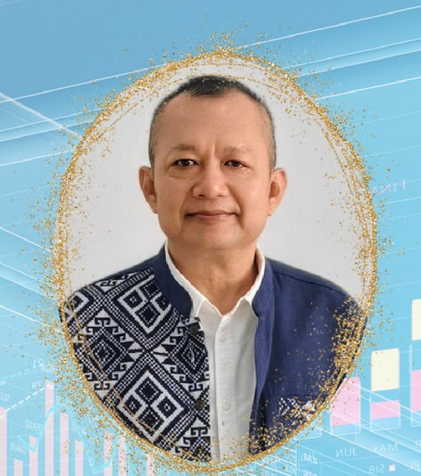
ผศ.ดร.วิชยุทธ จันทะรี
หัวหน้าโครงการวิจัย
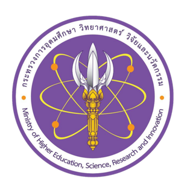
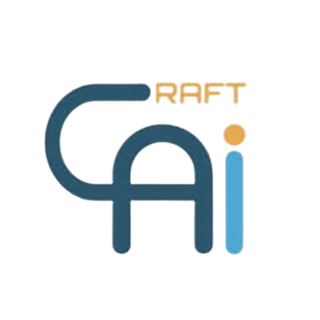
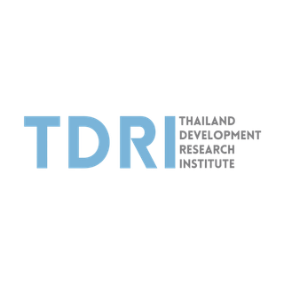
บุคลากรผู้ร่วมดำเนินโครงการ แบ่งเป็น 3 ทีมทำงานและกลุ่มผู้ช่วยนักวิจัย
อำนวยการโครงการ นโยบาย และการนิเทศ
12 คน
หัวหน้าโครงการวิจัย
หัวหน้าสาขาวิชาบริหารธุรกิจ
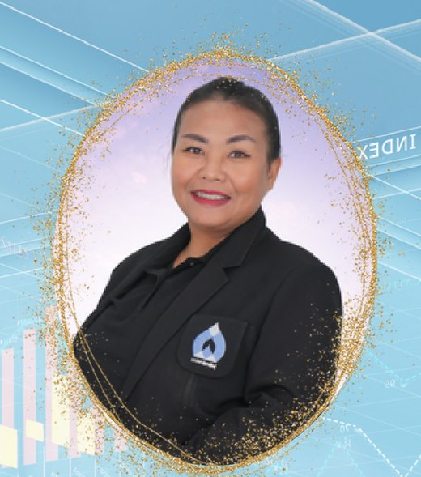
อาจารย์ประจำสาขาวิชาคอมพิวเตอร์ธุรกิจ
รองศึกษาธิการจังหวัดกาฬสินธุ์
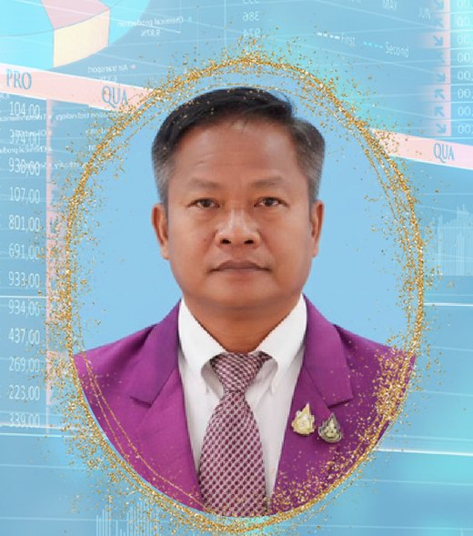
ศึกษานิเทศก์ชำนาญการพิเศษ
ศึกษานิเทศก์ชำนาญการพิเศษ
อบจ. กาฬสินธุ์
ผู้อำนวยการกองการศึกษา ศาสนาและวัฒนธรรม
นักวิเคราะห์นโยบายและแผน ชำนาญการ
ผู้จัดการสำนักงานบริการ
กสท.กาฬสินธุ์
ครูชำนาญการพิเศษ
โรงเรียนสมเด็จพิทยาคม
ครูชำนาญการพิเศษ
โรงเรียนดงสวางวิทยายน
ครูผู้ช่วย
โรงเรียนร่องคำ
พัฒนาหลักสูตร นวัตกรรมการศึกษา และเทคโนโลยี
11 คน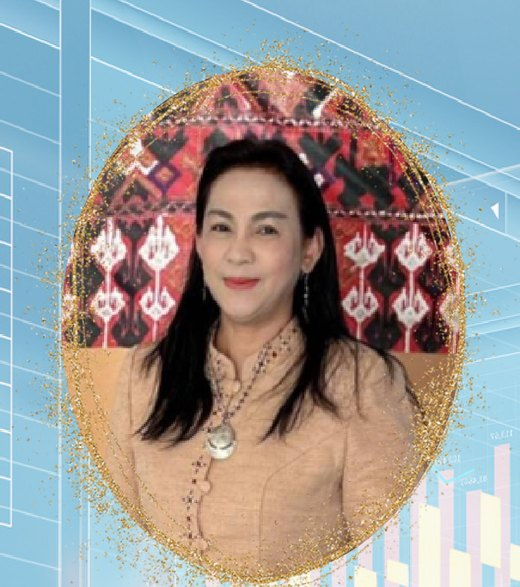
อาจารย์ประจำสาขาการจัดการ
คณะบริหารศาสตร์
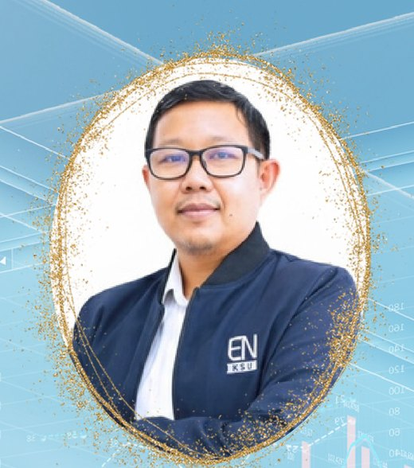
อาจารย์
คณะวิศวกรรมศาสตร์และเทคโนโลยีอุตสาหกรรม
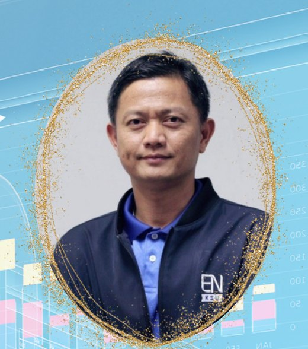
หัวหน้าสาขาวิชาวิศวกรรมศาสตร์
อาจารย์
คณะศึกษาศาสตร์และนวัตกรรมการศึกษา
อาจารย์
คณะศึกษาศาสตร์และนวัตกรรมการศึกษา
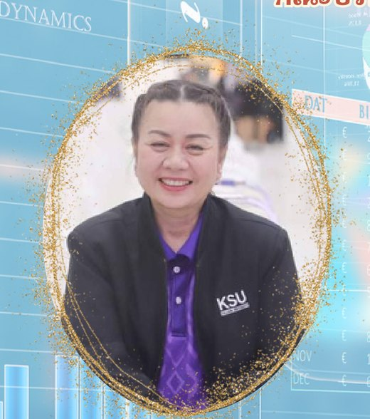
อาจารย์
คณะศึกษาศาสตร์และนวัตกรรมการศึกษา
อาจารย์
คณะศึกษาศาสตร์และนวัตกรรมการศึกษา
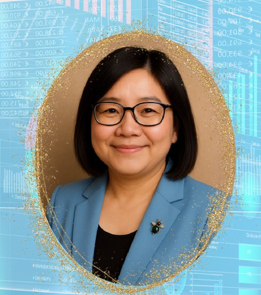
อาจารย์
คณะศึกษาศาสตร์และนวัตกรรมการศึกษา
อาจารย์
คณะวิศวกรรมศาสตร์และเทคโนโลยีอุตสาหกรรม
อาจารย์
คณะวิศวกรรมศาสตร์และเทคโนโลยีอุตสาหกรรม
อาจารย์
คณะวิศวกรรมศาสตร์และเทคโนโลยีอุตสาหกรรม
ประเมินผล สื่อสารโครงการ และหนุนเสริมสถานศึกษา
5 คนอาจารย์ประจำสาขาการตลาด
คณะบริหารศาสตร์
อาจารย์
คณะวิทยาศาสตร์และเทคโนโลยีสุขภาพ
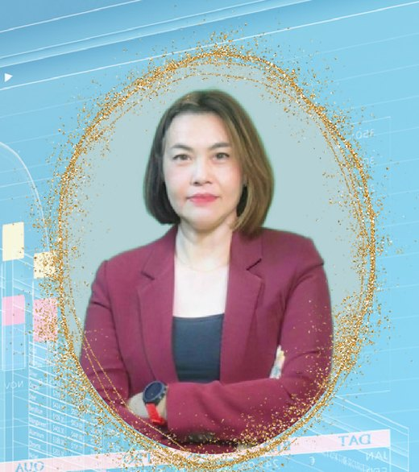
อาจารย์ประจำสาขาการตลาด
คณะบริหารศาสตร์
ศึกษานิเทศก์ชำนาญการพิเศษ
อบจ. กาฬสินธุ์
ศึกษานิเทศก์เชี่ยวชาญ กองการศึกษา ศาสนาและวัฒนธรรม
อบจ. กาฬสินธุ์
สนับสนุนงานภาคสนาม ข้อมูล และสื่อของโครงการ
5 คนผู้ช่วยนักวิจัย
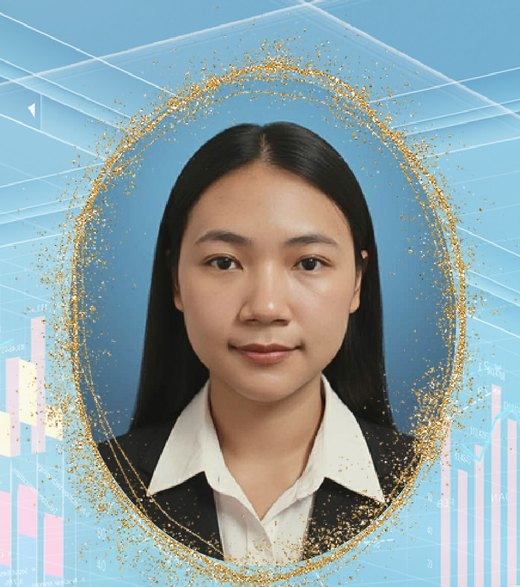
ผู้ช่วยนักวิจัย
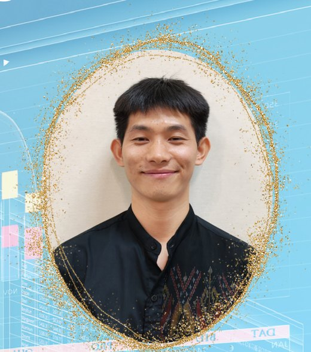
ผู้ช่วยนักวิจัย
ผู้ช่วยนักวิจัย
ผู้ช่วยนักวิจัย
ข้อมูลและภาพบุคลากรจากเอกสาร “แนะนำบุคลากร ทีม ABC” มหาวิทยาลัยกาฬสินธุ์